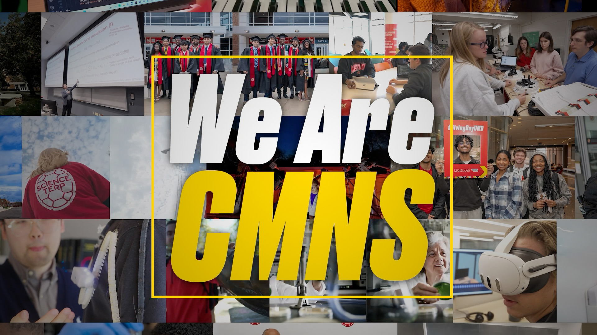
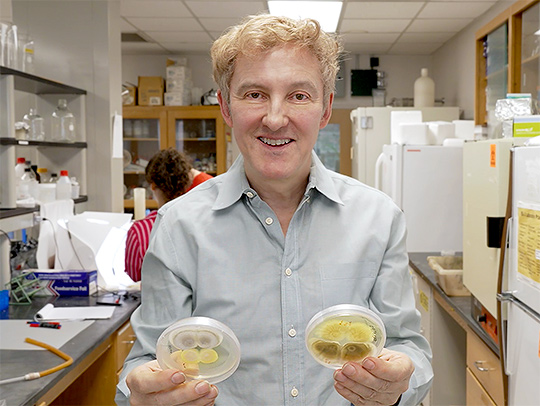
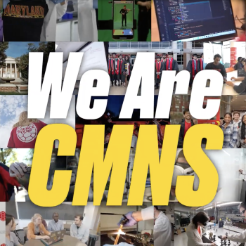
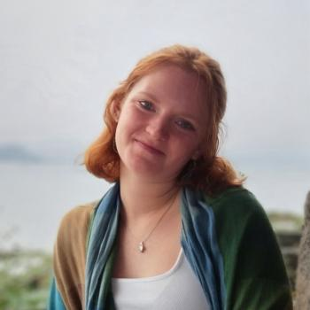
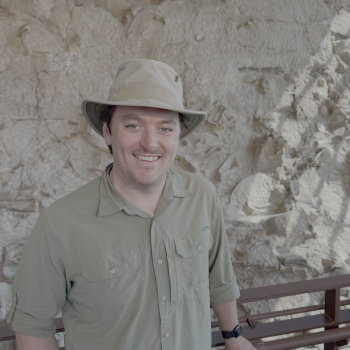
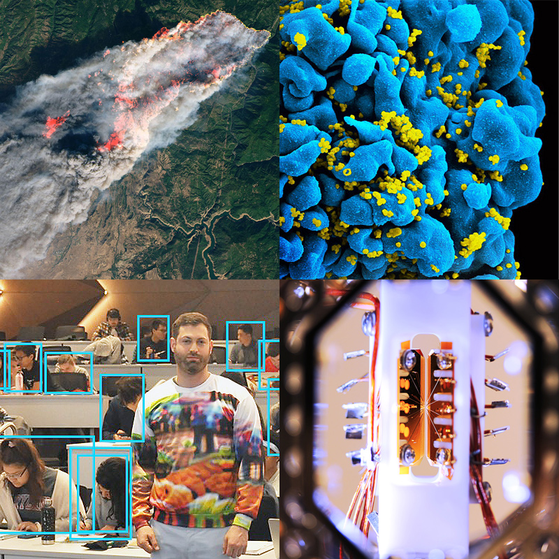
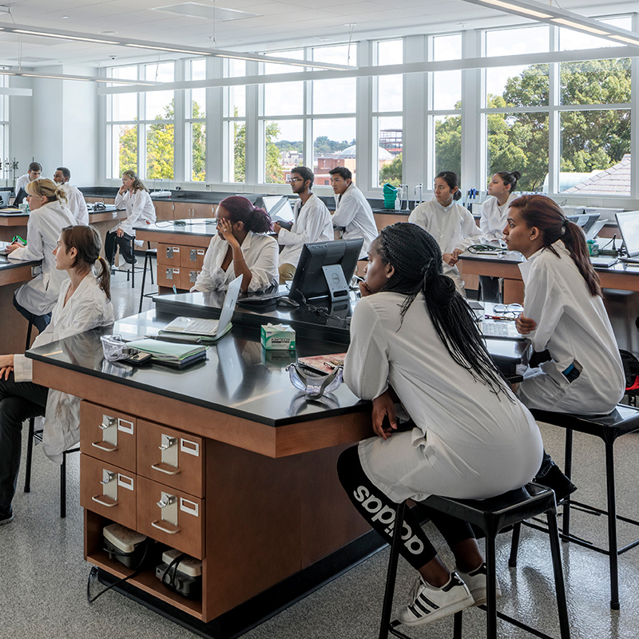
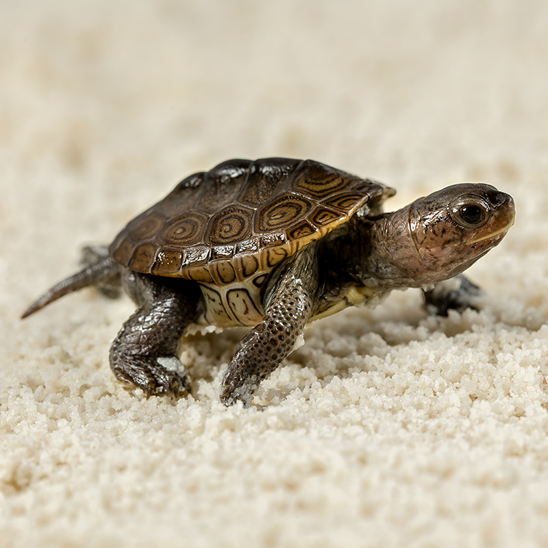
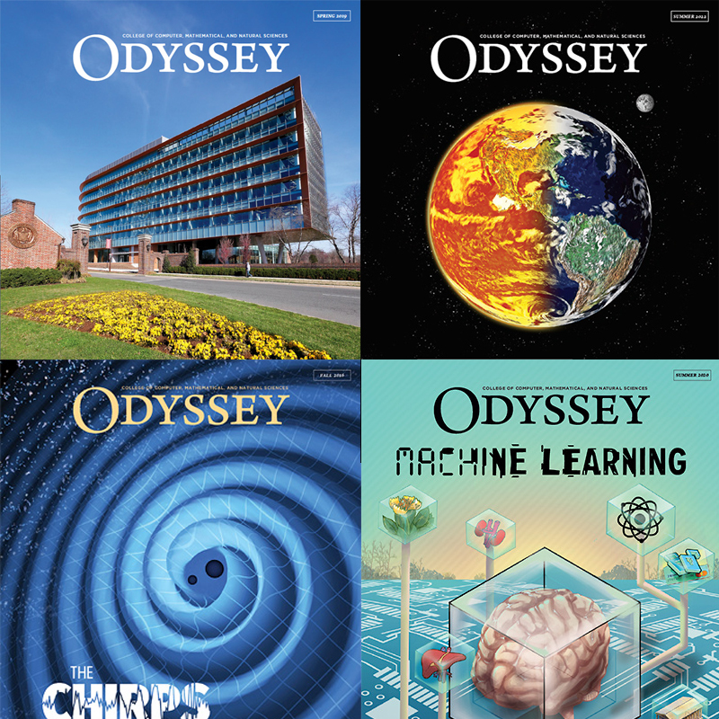

Undergraduate and Graduate Students
Top-25 Ranked Programs
U.S. News & World Report
Annual Sponsored Research Funding

The goal is to kill disease-carrying mosquitoes and replace the chemical insecticides to which they have become resistant.
Watch Video


Our education, research, scholarship and creative activities, and service are designed to accelerate solutions to humanity's grand challenges—within our communities and around the globe.

We see the signs everywhere—our future is in jeopardy. As Earth's temperature rises, greenhouse gases reach record levels and severe weather events strike with frightening frequency. Our researchers are fiercely committed to the fight against global warming, tapping into satellite data to predict crop-killing droughts, identifying climate-resilient trees, and unraveling the relationship between airborne pollutants and weather conditions.
Scientists in CMNS are tackling the dynamics of infectious and hereditary diseases at all scales—from complex multispecies conditions such as malaria to whole-body aging disorders, from the flu's organ-specific infection pathway to the submicroscopic structure of disease-causing viruses and disease-fighting antibodies.
Researchers in CMNS work at the forefront of machine learning technology, using AI for applications that touch weather prediction, health care, transportation, finance, and wildlife conservation—while advancing the science of how computers learn and asking important questions about its impact on society.
The University of Maryland is a powerhouse of quantum discovery. Over 200 quantum scientists and engineers are exploiting the unique properties of quantum physics to develop quantum computers capable of currently impossible calculations, ultra-secure quantum networking, and exotic new quantum materials.
CMNS astronomers, physicists, atmospheric scientists, and geologists are hard at work on the frontiers of space exploration. The college's close relationship with NASA's Goddard Space Flight Center enables faculty and students to share research facilities and advance our understanding of the universe.



College of Computer, Mathematical, and Natural Sciences
Dean's Office: 3400 A.V. Williams Building